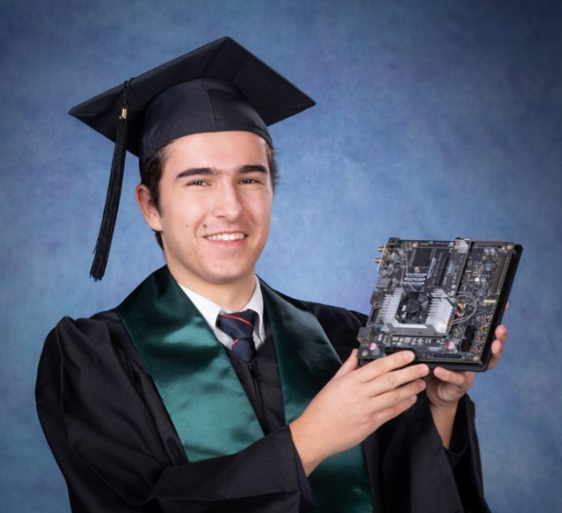

Alexander Alexiev
I am studying Robotics in the Engineering Science program at the University of Toronto. I'm passionate about computer vision and planning and control for robotics, but i'm love to spent time exploring different topics like reinforcement learning.
I spent a summer working at Electronic Arts developing computer vision models to detect animation glitches in the FIFA game series to reduce the load on human game testers. Now I'm applying some of the computer vision skills I learned to task and motion planning algorithms for robotics research at the RVL lab.
This website showcases some of my projects.